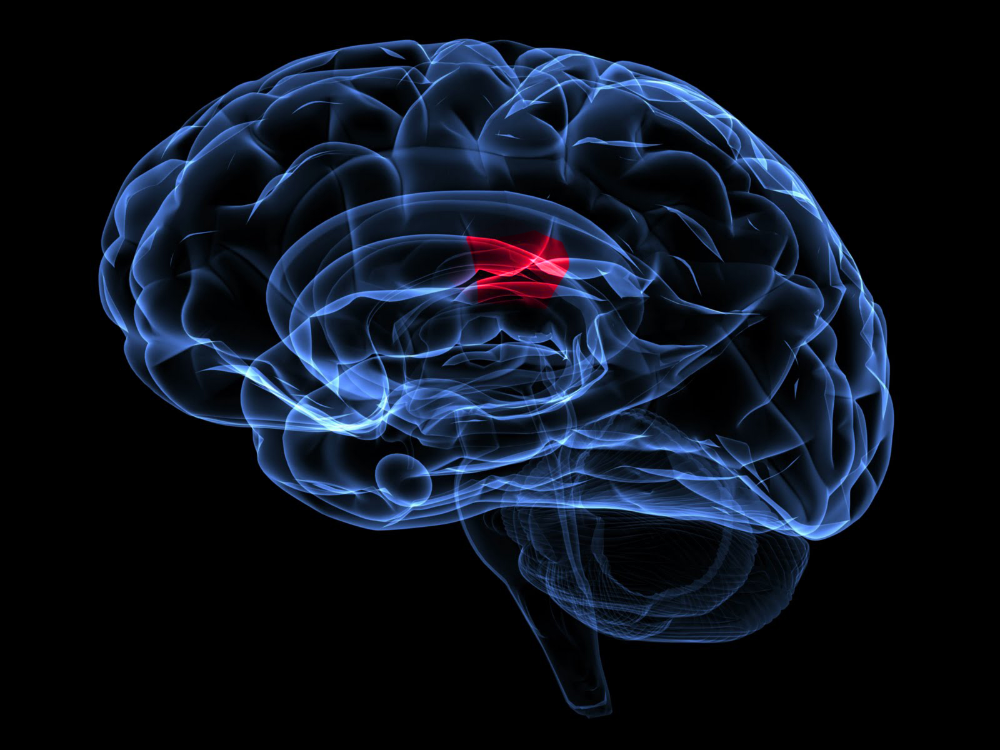

Neural (Brain) Area of Transmission
Gustatory Sensation
Primary Somatosensory Cortex

-
- Somatosensory Area
- The gustatory system allows humans to distinguish between safe and harmful food. Bitter and sour foods we find unpleasant, while salty, sweet, and meaty tasting foods generally provide a pleasurable sensation. The five specific tastes received by gustatory receptors are salty, sweet, bitter, sour, and umami, which means “delicious” in Japanese.
According to Lindemann, both salt and sour taste mechanisms detect, in different ways, the presence of sodium chloride in the mouth. The detection of salt is important to many organisms, but specifically mammals, as it serves a critical role in ion and water homeostasis in the body. It is specifically needed in the mammalian kidney as an osmotically active compound which facilitates passive re-uptake of water into the blood. Because of this, salt elicits a pleasant taste in most humans.
Sour taste can be mildly pleasant in small quantities, as it is linked to the salt flavour, but in larger quantities it becomes more and more unpleasant to taste. This is presumably because the sour taste can signal over-ripe fruit, rotten meat, and other spoiled foods, which can be dangerous to the body because of bacteria which grow in such mediums. Additionally, sour taste signals acids (H+ ions), which can cause serious tissue damage.
The bitter taste is almost completely unpleasant to humans. This is because many nitrogenous organic molecules which have a pharmacological effect on humans taste bitter. These include caffeine, nicotine, and strychnine, which respectively compose the stimulant in coffee, addictive agent in cigarettes, and active compound in many pesticides. It appears that some psychological process allows humans to overcome their innate aversion to bitter taste, as caffeinated drinks are widely consumed and enjoyed around the world. It is also interesting to note that many common medicines have a bitter taste if chewed; the gustatory system apparently interprets these compounds as poisons. In this manner, the unpleasant reaction to the bitter taste is a last-line warning system before the compound is ingested and can do damage.
Sweet taste signals the presence of carbohydrates in solution. Since carbohydrates have a very high calorie count (saccharides have many bonds, therefore much energy), they are desirable to the human body, which has been designed to seek out the highest calorie intake foods, as the human body in many cultures in the distant past were unaware of when their next meal would occur. They are used as direct energy (sugars) and storage of energy (glycogen). However, there are many non-carbohydrate molecules that trigger a sweet response, leading to the development of many artificial sweeteners, including saccharin, sucralose, and aspartame. It is still unclear how these substances activate the sweet receptors and what adaptational significance this has had. The umami taste, which signals the presence of the amino acid L-glutamate, triggers a pleasurable response and thus encourages the intake of peptides and proteins. The amino acids in proteins are used in the body to build muscles and organs, transport molecules (hemoglobin), antibodies, and the organic catalysts known as enzymes. These are all critical molecules, and as such it is important to have a steady supply of amino acids, hence the pleasurable response to their presence in the mouth.